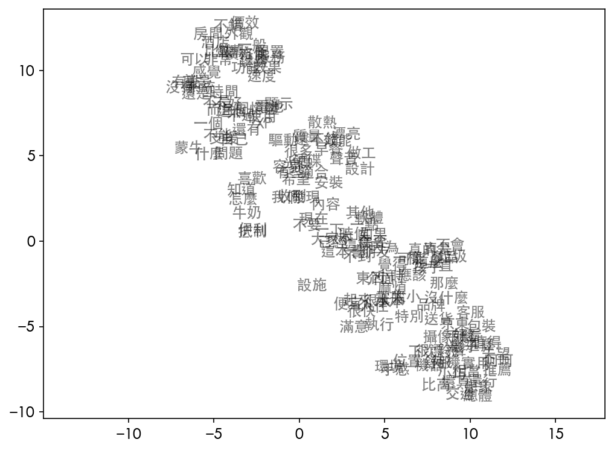
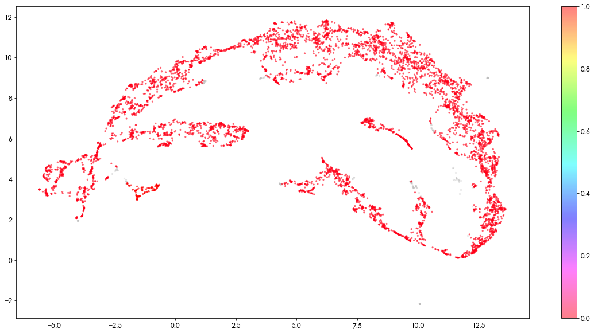
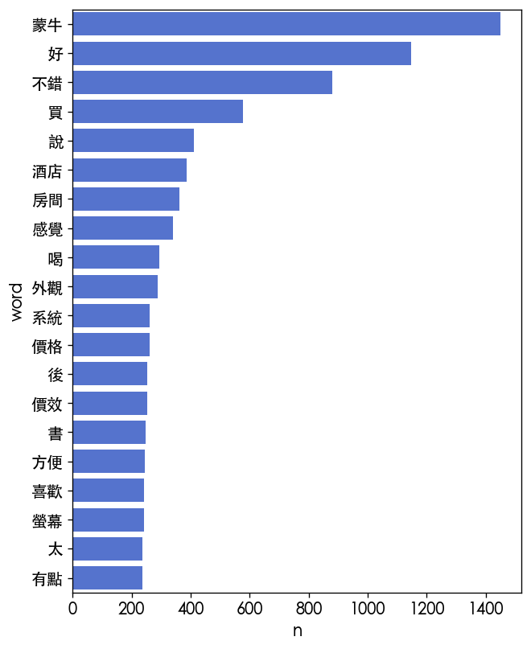
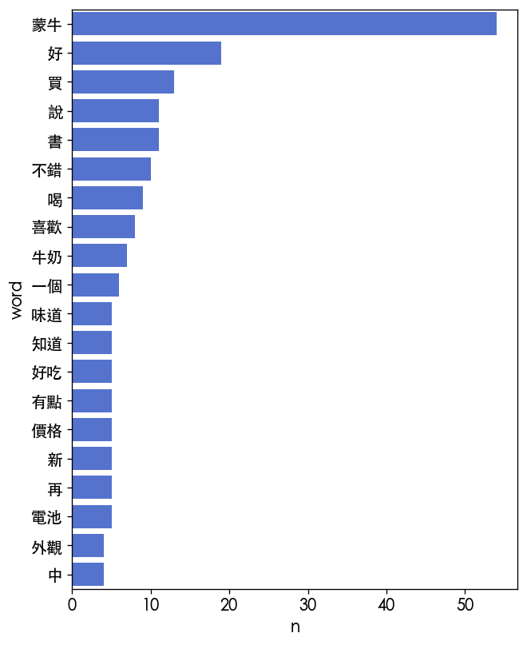

TM07 embedding and clustering
Contents
TM07 embedding and clustering#
在做文本聚類（Document Clustering）的時候，即使抽出每個文本的關鍵字，也有可能會有聚類效果不好（群與群之間分不開）的情形。這其中一種可能的原因是文本中有非常多意義相近或類型相近的名詞，但在計算的時候被視為不同的文字。例如在政治類文本中的「小英」或「蔡英文」意指同一個人，但在計算上就是兩個相異詞；又如下列兩個句子，叉燒和豆花都是一種食品，在句子中的位置非常接近，但如果就以抽關鍵字與文字作為特徵向量的方法來做文件比對，這就是兩個完全相異的詞。所以，我們想要找到一種方法，能夠讓「叉燒」和「豆花」這兩個字的表徵「Representation」相近一些。
這家的「叉燒」不好吃
這家的招牌「豆花」令人感到失望
「詞嵌入（Word embeddings）」的想法是，從上面兩句話來看，可以發現「叉燒」與「豆花」兩個字周遭的句法結構是非常接近的，而且主要是「店家+食品+評價」的句法結構。所以，可以嘗試把「叉燒」或「豆花」周遭的文字作為該詞的表徵（除了自己本身以外），這也可以簡單地說是一個詞出現的脈絡。如果可以用這樣的方式表徵「叉燒」與「豆花」，那自然「店家」或「評價」也可以被這樣表徵，同時就克服了「叉燒」與「豆花」周遭的文字也有可能會有意思相近的情形。
詞嵌入：將一個詞周遭一定範圍內的字詞（除了該詞本身）作為該詞的表徵。
Loading data#
import pandas as pd
df = pd.read_csv('data/sentiment.csv')
df.head(5)
| tag | text | |
|---|---|---|
| 0 | P | 店家很給力，快遞也是相當快，第三次光顧啦 |
| 1 | N | 這樣的配置用Vista系統還是有點卡。 指紋收集器。 沒送原裝滑鼠還需要自己買，不太好。 |
| 2 | P | 不錯，在同等檔次酒店中應該是值得推薦的！ |
| 3 | N | 哎！ 不會是蒙牛乾的吧 嚴懲真凶！ |
| 4 | N | 空尤其是三立電視臺女主播做的序尤其無趣像是硬湊那麼多字 |
print(df.shape)
print(df['tag'].value_counts())
(6388, 2)
N 3347
P 3041
Name: tag, dtype: int64
Tokenization#
import jieba
df['token_text'] = df['text'].apply(lambda x:list(jieba.cut(x)))
df.head(20)
Building prefix dict from the default dictionary ...
Loading model from cache /var/folders/j3/p4x0mssx55nd8dn903h5wdb00000gn/T/jieba.cache
Loading model cost 0.318 seconds.
Prefix dict has been built successfully.
| tag | text | token_text | |
|---|---|---|---|
| 0 | P | 店家很給力，快遞也是相當快，第三次光顧啦 | [店家, 很, 給力, ，, 快遞, 也, 是, 相當快, ，, 第三次, 光顧, 啦] |
| 1 | N | 這樣的配置用Vista系統還是有點卡。 指紋收集器。 沒送原裝滑鼠還需要自己買，不太好。 | [這樣, 的, 配置, 用, Vista, 系統, 還是, 有點, 卡, 。, , 指紋,... |
| 2 | P | 不錯，在同等檔次酒店中應該是值得推薦的！ | [不錯, ，, 在, 同等, 檔次, 酒店, 中應, 該, 是, 值得, 推薦, 的, ！] |
| 3 | N | 哎！ 不會是蒙牛乾的吧 嚴懲真凶！ | [哎, ！, , 不會, 是, 蒙牛, 乾, 的, 吧, , 嚴懲, 真凶, ！] |
| 4 | N | 空尤其是三立電視臺女主播做的序尤其無趣像是硬湊那麼多字 | [空, 尤其, 是, 三立, 電視, 臺, 女主播, 做, 的, 序, 尤其, 無趣, 像是... |
| 5 | N | 明明買了6本書，只到了3本，也沒有說是什麼原因，以後怎麼信的過？？？？？？？？？？？ | [明明, 買, 了, 6, 本書, ，, 只到, 了, 3, 本, ，, 也, 沒, 有, ... |
| 6 | P | 看了一下感覺還可以 | [看, 了, 一下, 感覺還, 可以] |
| 7 | P | 散熱還不錯，玩遊戲cpu溫度和硬碟溫度都在56以下， 速度很好，顯示卡也不錯 | [散熱, 還不錯, ，, 玩遊戲, cpu, 溫度, 和, 硬碟, 溫度, 都, 在, 56... |
| 8 | P | 外觀好看，白色的自己貼紙也方便，vista執行起來速度也還不錯.屬於主流配置了。一般用用可以的 | [外觀, 好看, ，, 白色, 的, 自己, 貼紙, 也, 方便, ，, vista, 執行... |
| 9 | N | 水超級小 用的時候還要先修理一下花灑 售後還說是水壓問題 說本來標配都是這樣還要自己重新換一個 | [水超級, 小, , 用, 的, 時候, 還要, 先, 修理, 一下, 花灑, , 售後... |
| 10 | N | 太差啦,不知道是怎麼評的4星.結帳時還非說有房間點了歌,每首2圓,懶得跟他廢話就多掏了4塊錢. | [太差, 啦, ,, 不, 知道, 是, 怎麼, 評, 的, 4, 星, ., 結帳, 時,... |
| 11 | P | 覺得這兒牛奶怎麼樣呢。蒙牛霸氣外露，特倫蘇 | [ , 覺得, 這兒, 牛奶, 怎麼樣, 呢, 。, 蒙牛, 霸氣, 外露, ，, 特倫蘇] |
| 12 | N | 外觀可以，系統真難裝,LINUX 系統根本不能裝 GHOST 版本的XP 而且剛買就降100 | [外觀, 可以, ，, 系統, 真難裝, ,, LINUX, , 系統, 根本, 不能, ... |
| 13 | P | 外觀很有檔次，如果有紅色的話女生用剛好，很漂亮，。。同價位中配置高，很實惠了。 | [外觀, 很, 有, 檔次, ，, 如果, 有紅色, 的, 話, 女生, 用剛, 好, ，,... |
| 14 | P | 今天我用吸馬桶的棒子買了一個我喜歡吃的蒙牛大果粒。。。好有樂趣啊。。。吸著它走了。。。 | [今天, 我用, 吸馬桶, 的, 棒子, 買, 了, 一個, 我, 喜歡, 吃, 的, 蒙牛... |
| 15 | N | 我一直不明白為什麼這本書會有這麼毒人關注，還是要保持清醒的頭腦，認真鑑別 | [我, 一直, 不, 明白, 為, 什麼, 這本書會, 有, 這麼, 毒人, 關注, ，, ... |
| 16 | P | 價效比不錯，鍵盤比較舒服。螢幕的現實效果很好，小巧輕便。自帶的視訊軟體比較好用。 | [價效, 比不錯, ，, 鍵盤, 比, 較, 舒服, 。, 螢幕, 的, 現實, 效果, 很... |
| 17 | P | 1、原來說系統是配DOS，收到的卻是正版Vista 2、原來說硬碟是250G，收到的是320G | [1, 、, 原來, 說, 系統, 是, 配, DOS, ，, 收到, 的, 卻, 是, 正... |
| 18 | N | 看過嘟嘟和巴豆後，就覺得這本書買怨了。 | [看過, 嘟嘟, 和, 巴豆, 後, ，, 就, 覺得, 這本書, 買, 怨, 了, 。] |
| 19 | P | 原來說系統是配DOS，收到的卻是正版Vista 2、原來說硬碟是250G，收到的是320G | [原來, 說, 系統, 是, 配, DOS, ，, 收到, 的, 卻, 是, 正版, Vis... |
Term frequency#
Loading stopwords#
with open("data/stopwords_zh-tw.txt", encoding="utf-8") as fin:
stopwords = fin.read().split("\n")[1:]
print(stopwords[:100])
print(len(stopwords))
['?', '、', '。', '“', '”', '《', '》', '！', '，', '：', '；', '？', '人民', '末##末', '啊', '阿', '哎', '哎呀', '哎喲', '唉', '我', '我們', '按', '按照', '依照', '吧', '吧噠', '把', '罷了', '被', '本', '本著', '比', '比方', '比如', '鄙人', '彼', '彼此', '邊', '別', '別的', '別說', '並', '並且', '不比', '不成', '不單', '不但', '不獨', '不管', '不光', '不過', '不僅', '不拘', '不論', '不怕', '不然', '不如', '不特', '不惟', '不問', '不只', '朝', '朝著', '趁', '趁著', '乘', '沖', '除', '除此之外', '除非', '除了', '此', '此間', '此外', '從', '從而', '打', '待', '但', '但是', '當', '當著', '到', '得', '的', '的話', '等', '等等', '地', '第', '叮咚', '對', '對於', '多', '多少', '而', '而況', '而且', '而是']
1208
Detecting Chinese punctuation#
import unicodedata # for removing Chinese puctuation
from collections import Counter
print(unicodedata.category('我').startswith('P'))
word_count = Counter()
for tokens in df['token_text']:
for tok in tokens:
try:
if len(tok) > 1 and not unicodedata.category(tok[0]).startswith('P'):
word_count[tok] += 1
except:
print("%s\tTypeError: category() argument must be a unicode character, not str"%(tok))
for k, v in word_count.most_common(10):
print(k, '\t', v)
False
蒙牛 1556
不錯 907
可以 470
沒有 402
酒店 385
房間 366
就是 359
感覺 350
還是 340
外觀 294
Building word2vec model#
Building model#
vector_size: 每個詞要表徵為多少維度的向量window: 每個詞的表徵要納入前後多少個詞。
from gensim.models import Word2Vec
model = Word2Vec(df['token_text'], min_count=1, vector_size=300, window=10, sg=0, workers=4)
Testing Similarity#
Number of dimensions of the NumPy array:
.ndimShape of the NumPy array:
.shapeSize of the NumPy array:
.sizeSize of the first dimension of the NumPy array:
len()
print(model.wv["火鍋"].shape)
print(model.wv["火鍋"].size)
print(model.wv["火鍋"].ndim)
print(len(model.wv["火鍋"]))
model.wv["火鍋"]
(300,)
300
1
300
array([-1.46019610e-03, 1.06473891e-02, 7.09096668e-04, 5.71240438e-03,
-7.72623112e-03, -1.72200445e-02, 1.74227487e-02, 2.26314683e-02,
2.93353712e-03, -1.10694030e-02, 7.82255828e-03, 9.08766757e-04,
-6.07741810e-03, 5.72379678e-03, -7.40091177e-03, -9.22703464e-03,
9.62906424e-03, 2.26454996e-03, -4.87724785e-03, -7.40178954e-03,
-5.82358986e-03, 2.24869605e-03, 9.34716780e-03, 7.88212474e-03,
8.56945664e-03, 3.54554271e-03, -1.76140498e-02, 2.48627202e-03,
-1.16636083e-02, -8.83024186e-03, -5.27657801e-03, -2.52553262e-03,
5.68933319e-03, -1.21072924e-03, -1.36221142e-03, 6.91262074e-03,
7.35352188e-03, -9.03457031e-03, -5.18145086e-03, 2.92499969e-03,
-6.44382788e-03, 4.62001888e-03, 4.82620671e-03, -1.06172059e-02,
8.78631324e-03, 7.79262790e-03, 3.28548066e-03, 8.19741096e-03,
-1.93532687e-05, 1.29510416e-02, -9.78268916e-04, -1.29140477e-04,
-7.55581725e-03, 5.20945806e-03, -2.08554720e-03, 6.46959618e-03,
5.51806949e-03, 7.67231279e-04, -2.27687764e-03, 1.69545913e-03,
-8.85945559e-03, -2.89114146e-03, 6.28363108e-04, 8.32161214e-03,
-6.08367787e-04, 5.76285087e-03, -4.30838764e-03, 8.75745155e-03,
-4.89678513e-03, 4.95832507e-03, 2.80480343e-03, 5.95486164e-03,
3.18757864e-03, -1.09605640e-02, 4.72781807e-03, -6.55542652e-04,
-7.74877938e-03, 1.78122183e-03, -1.59593567e-03, 1.02195051e-02,
-5.89102646e-03, -5.45128388e-03, 7.42618693e-04, 1.81682464e-02,
3.60894192e-04, 4.16978309e-03, 2.64654285e-04, 1.91639212e-03,
9.91299562e-03, 5.53430011e-03, 8.41499586e-03, -3.95238400e-03,
6.83022372e-04, -1.89633050e-03, 1.57300904e-02, 9.93330590e-03,
9.42126103e-03, -8.14750884e-03, -4.18355688e-03, 6.23816717e-03,
-4.32700710e-03, -3.61667364e-03, 2.76737660e-03, 4.13281238e-03,
5.14467293e-03, -9.40382667e-03, -8.57550278e-03, 3.80325643e-03,
-1.35478862e-02, 5.10289986e-03, -1.06285242e-02, -4.89847315e-03,
2.48966133e-03, 2.44803727e-03, 2.56362511e-03, 2.42604525e-03,
1.43993867e-03, 7.82898627e-03, 1.55735528e-02, -1.51573829e-02,
7.04262918e-03, 6.73942920e-03, 3.11719463e-03, -5.66029828e-03,
5.78117142e-05, 7.04910420e-03, -5.63335186e-03, -8.36271420e-03,
2.75892601e-03, 1.10117821e-02, 3.67055787e-03, 7.53194327e-03,
8.78050737e-03, -2.32655890e-02, 1.37686578e-03, 8.59739818e-03,
-6.59992872e-03, -5.34982188e-03, -2.35048798e-03, -7.66660320e-03,
1.17852818e-02, -2.13047750e-02, -3.67739983e-03, 7.76822632e-03,
4.63385135e-03, 1.94807432e-03, -1.20966863e-02, -3.39603098e-03,
8.92631523e-03, -1.04489503e-02, 4.22087917e-03, -1.38346879e-02,
-6.80194702e-03, -4.95540770e-03, 2.62431055e-03, 3.89511883e-03,
-9.34110396e-03, -7.45953573e-03, 2.51736934e-03, 1.12244235e-02,
6.34746673e-03, 9.18490347e-03, -1.42340902e-02, 1.28630465e-02,
-6.65662391e-03, 9.00796149e-03, 3.16033047e-03, 1.20868057e-03,
6.02588290e-04, 2.15418749e-02, -7.97906145e-03, -5.33142174e-03,
5.43285208e-03, 2.07068329e-03, 6.15755189e-03, 7.37153087e-03,
-7.12118717e-03, -2.03931751e-03, 1.86081335e-03, -1.33842917e-03,
-7.18803611e-03, 9.38901119e-03, -1.03144292e-02, -2.67785252e-03,
-3.81590426e-03, 1.23856892e-03, 1.73736475e-02, 6.29386073e-03,
1.02549139e-02, -1.09824920e-02, 4.64643026e-03, -9.46869201e-04,
-1.07305460e-02, -3.81438760e-03, 7.96348380e-04, -1.35134449e-02,
7.12283421e-04, -1.30927162e-02, 1.96432913e-04, -2.73287325e-04,
-7.83402566e-03, -1.21678098e-03, -3.08432640e-03, -7.62295024e-03,
5.59281383e-04, -4.08982299e-03, -2.84070708e-03, 2.16193753e-03,
-3.10951634e-03, -4.33730707e-03, -8.41316651e-05, -1.20478589e-02,
-4.84046014e-03, -9.76031832e-03, 2.94787809e-03, -8.75350460e-03,
-3.42767988e-03, -1.51844071e-02, -1.22434832e-02, -1.14239398e-02,
7.97669869e-03, 4.90156002e-03, -8.51113256e-03, -7.73763005e-03,
-2.80762371e-03, -3.21061048e-03, 2.32145027e-03, 1.09170424e-03,
-9.63617582e-03, 4.11291840e-03, 8.39625485e-03, -3.44479154e-03,
-6.66249450e-03, 2.46821408e-04, -8.75181518e-03, 6.72719581e-03,
2.00327346e-03, 2.32205051e-03, 3.95240309e-03, -1.06766196e-02,
5.04882820e-03, -7.56873516e-03, -2.54867831e-03, -3.67003120e-03,
2.69597163e-03, -1.11130383e-02, -1.03546970e-03, -2.18959525e-03,
3.81953735e-03, 6.19251234e-03, 3.71066201e-03, 1.14872155e-03,
5.81917912e-03, -6.18977565e-03, -1.17438305e-02, -6.37703715e-03,
1.53552731e-02, 5.21417055e-03, -1.92934759e-02, -7.35225342e-03,
9.30787902e-03, 6.58916542e-04, 5.01113571e-03, -1.53417531e-02,
-1.58218313e-02, -1.76079210e-03, 1.14978096e-02, 3.40538402e-03,
-9.64053161e-03, 6.67789625e-03, -4.48367558e-03, -1.11736567e-03,
3.04809632e-03, -1.90693152e-03, 8.61872081e-03, 6.37510372e-03,
1.68373846e-02, 7.51028350e-03, -1.42266611e-02, 3.39465868e-03,
4.21267794e-03, -1.07465067e-03, -3.43428482e-03, -3.50030197e-04,
-3.15236929e-03, -1.26032601e-03, -1.08070960e-02, 9.36834794e-03,
4.00084630e-03, 5.71880396e-03, 3.69248842e-03, 8.90379772e-03,
1.12903118e-02, 1.04107428e-03, 1.10777784e-02, 1.29962591e-02,
5.49231935e-03, -7.68668251e-03, 7.86197372e-03, -8.84979777e-03],
dtype=float32)
# 他 : 工程師 = 她 : ?
print(model.wv.most_similar(["火鍋", "好吃"], ["廁所"], topn=20))
print("-"*40)
# 他 : 醫師 = 她 : ?
print(model.wv.most_similar(["鍵盤", "工具"], ["垃圾"], topn=20))
[("'", 0.9395562410354614), ('生命', 0.9381563067436218), ('光明', 0.9369486570358276), ('唉', 0.9360681772232056), ('珍惜', 0.9357925653457642), ('香蕉', 0.9355625510215759), ('牛奶', 0.9346563220024109), ('珍愛', 0.9346368312835693), ('突然', 0.9344521760940552), ('哎', 0.9341952204704285), ('強烈', 0.9341100454330444), ('中糧', 0.9338185787200928), ('你好', 0.9337747097015381), ('遠離', 0.9334663152694702), ('酸牛奶', 0.9332666993141174), ('到底', 0.9331861138343811), ('酸酸乳', 0.9327061176300049), ('香草', 0.9326550960540771), ('不吃', 0.9323577880859375), ('物', 0.9321866631507874)]
----------------------------------------
[('溫馨', 0.8191637396812439), ('較', 0.8137165904045105), ('比比', 0.8112451434135437), ('比', 0.8110052347183228), ('價效', 0.8090468049049377), ('高', 0.8073566555976868), ('不錯', 0.8067469596862793), ('比還', 0.8063320517539978), ('套房', 0.805300772190094), ('輕便', 0.8026587963104248), ('出入', 0.8022139072418213), ('外觀還', 0.8012436628341675), ('外觀', 0.8006801009178162), ('以後才', 0.7997182607650757), ('環境', 0.7982993721961975), ('市區', 0.7976033091545105), ('手感', 0.797430694103241), ('交通', 0.7964299917221069), ('環繞', 0.7960230708122253), ('乾淨', 0.7959128022193909)]
Visualiation with Dimension reduction#
%matplotlib inline
import matplotlib.pyplot as plt
plt.gcf().set_size_inches(24, 16)
#
plt.rcParams.update({'font.size': 12})
plt.rcParams['font.family'] = ['Heiti TC']
<Figure size 1728x1152 with 0 Axes>
Retrieve top 150 to visualize#
words = [k for k, v in word_count.most_common(150)]
print(words)
X = []
for word in words:
X.append(model.wv[word])
['蒙牛', '不錯', '可以', '沒有', '酒店', '房間', '就是', '感覺', '還是', '外觀', '一般', '系統', '價格', '非常', '價效', '螢幕', '喜歡', '方便', '有點', '這個', '什麼', '不是', '比較', '功能', '服務', '一個', '配置', '問題', '不好', '速度', '時間', '鍵盤', '支援', '自己', '不過', '知道', '而且', '電池', 'XP', '效果', '質量', '還不錯', '驅動', '不能', '怎麼', '散熱', '記憶體', '抵制', '東西', '伊利', '漂亮', '滿意', '顯示', '牛奶', '早餐', '收到', '使用', '還有', '安裝', '內容', '做工', '效能', '這本書', '便宜', '環境', '很快', '設施', '這樣', '時候', '很多', '聲音', '適合', '發現', '手感', '一點', '現在', '容易', '朋友', '光碟', '有些', '真的', '硬碟', '其他', '已經', '機器', '應該', '覺得', '麻煩', '產品', '起來', '大家', '那麼', '好看', '我們', '舒服', '電腦', '不要', '位置', '值得', '希望', '一下', '如果', '入住', '沒什麼', '設計', '特別', '一樣', '可能', '一本', '待機', '不會', '執行', '小巧', '因為', '很大', '京東', '送貨', '下次', '軟體', '不到', '包裝', '本本', '還行', '很漂亮', '品牌', '真是', '太小', '介面', '需要', '鈴聲', '總體', '推薦', '這麼', '失望', '攝像頭', '一直', '垃圾', '比高', '手機', '想象', '選擇', '機子', '客服', '交通', '小時', '孩子', '實用', '還算', '呵呵', '相當']
Reduced by PCA#
from sklearn.decomposition import PCA
pca = PCA(n_components=2)
points = pca.fit_transform(X)
points[:20]
array([[ 4.45295065, 6.12486648],
[ 3.35412707, -2.67495554],
[ 4.39443871, -0.53960607],
[ 4.36624503, 0.93536925],
[ 3.56097978, -1.46103663],
[ 4.32712072, -1.89502723],
[ 3.49667216, 0.35075684],
[ 3.30196079, -0.2323022 ],
[ 3.37351892, 0.52549716],
[ 2.71796803, -2.17420625],
[ 2.17459039, -1.63545541],
[ 3.34260932, 0.38931242],
[ 2.52496681, -1.18688818],
[ 3.14938452, -0.85187375],
[ 2.33902621, -2.93652831],
[ 2.93322846, -1.22550478],
[ 0.73864676, 1.2293023 ],
[ 2.08245173, -1.28920714],
[ 3.92591215, 0.63342466],
[ 2.04456186, 0.29592054]])
Reduced by t-SNE#
from sklearn.manifold import TSNE
tsne = TSNE(n_components=2, random_state=0)
points = tsne.fit_transform(X)
points[:20]
/Users/jirlong/opt/anaconda3/lib/python3.9/site-packages/sklearn/manifold/_t_sne.py:780: FutureWarning: The default initialization in TSNE will change from 'random' to 'pca' in 1.2.
warnings.warn(
/Users/jirlong/opt/anaconda3/lib/python3.9/site-packages/sklearn/manifold/_t_sne.py:790: FutureWarning: The default learning rate in TSNE will change from 200.0 to 'auto' in 1.2.
warnings.warn(
array([[-7.3718696, 5.2110415],
[-5.0357213, 12.372117 ],
[-7.000885 , 10.399493 ],
[-7.8293176, 8.7261505],
[-5.8193865, 11.392393 ],
[-6.2049537, 11.875104 ],
[-6.857225 , 9.092149 ],
[-6.271092 , 9.622401 ],
[-6.9322405, 8.393583 ],
[-4.4414344, 11.880708 ],
[-3.670734 , 11.205547 ],
[-6.6374264, 8.717434 ],
[-4.4248257, 10.73653 ],
[-5.631261 , 10.356378 ],
[-4.078016 , 12.513337 ],
[-4.925961 , 10.84717 ],
[-3.6556008, 3.3916368],
[-3.5925732, 10.702032 ],
[-7.4741673, 9.059083 ],
[-4.822103 , 7.3707542]], dtype=float32)
Plotting#
Plot by matplotlib or seaborn#
# fig = plt.gcf()
# fig.set_size_inches(24, 16)
plt.figure(figsize=(8, 6), dpi=150)
# plt.figure(figsize=(8, 6), dpi=300)
plt.rcParams.update({'font.size': 12})
plt.rcParams['font.family'] = ['Heiti TC']
for i in range(len(points)):
x = points[i][0]
y = points[i][1]
plt.scatter(x, y, alpha=0)
plt.annotate(words[i], xy=(x, y), alpha=0.5)
plt.axis('equal')
(-8.759945464134216,
11.71386821269989,
-10.399217653274537,
13.604411172866822)

plot by bokeh#
https://stackoverflow.com/questions/40450943/adding-labels-to-a-bokeh-plot
https://docs.bokeh.org/en/latest/docs/user_guide/annotations.html
import pandas as pd
import numpy as np
scatter = pd.DataFrame(points, columns = ['x', 'y'])
scatter['label'] = words
scatter
| x | y | label | |
|---|---|---|---|
| 0 | -7.371870 | 5.211041 | 蒙牛 |
| 1 | -5.035721 | 12.372117 | 不錯 |
| 2 | -7.000885 | 10.399493 | 可以 |
| 3 | -7.829318 | 8.726151 | 沒有 |
| 4 | -5.819386 | 11.392393 | 酒店 |
| ... | ... | ... | ... |
| 145 | 6.615671 | -1.848195 | 孩子 |
| 146 | 9.448706 | -7.453983 | 實用 |
| 147 | 8.318231 | -8.505739 | 還算 |
| 148 | 10.783240 | -7.270677 | 呵呵 |
| 149 | 8.888368 | -7.922950 | 相當 |
150 rows × 3 columns
# !pip install bokeh
# !pip install jupyter_bokeh
from bokeh.models import ColumnDataSource, Label, LabelSet, Range1d
from bokeh.plotting import figure, output_file, show
from bokeh.io import output_notebook
output_notebook()
p = figure(title = "w2v")
p.circle(scatter["x"], scatter["y"], fill_alpha=0.2, size=10)
labels = LabelSet(x='x', y='y', text='label',
x_offset=5, y_offset=5,
source=ColumnDataSource(scatter), render_mode='canvas')
p.add_layout(labels)
show(p)
Doc clustering with embeddings#
Sum up wordvec to docvec#
all_list = []
for i, tokens in enumerate(df["token_text"]):
temp_w2v = np.zeros(300)
for tok in tokens:
temp_w2v += model.wv[tok]
all_list.append(temp_w2v)
Convert to numpy array#
import numpy as np
X = np.array(all_list)
X.shape
(6388, 300)
Reduce dimension by umap#
# !pip install umap-learn
import umap
umap_embeddings = umap.UMAP(n_neighbors=15,
n_components=5,
metric='cosine').fit_transform(X)
Clustering by hdbscan#
# !pip install hdbscan
import hdbscan
from collections import Counter
cluster = hdbscan.HDBSCAN(min_cluster_size= 50,
metric='euclidean',
cluster_selection_method='eom').fit(umap_embeddings)
df['cluster'] = list(cluster.labels_)
print(df.columns)
print(Counter(df['cluster']))
Index(['tag', 'text', 'token_text', 'cluster'], dtype='object')
Counter({0: 6082, -1: 185, 1: 121})
Plotting#
import matplotlib.pyplot as plt
# Prepare data
# Reduce original data to two dimensions
umap_data = umap.UMAP(n_neighbors=15, n_components=2, min_dist=0.0, metric='cosine').fit_transform(X)
# Combine x and y and cluster label
result = pd.DataFrame(umap_data, columns=['x', 'y'])
result['labels'] = cluster.labels_
# Visualize clusters
fig, ax = plt.subplots(figsize=(20, 10))
outliers = result.loc[result.labels == -1, :]
clustered = result.loc[result.labels != -1, :]
plt.scatter(outliers.x, outliers.y, color='#BDBDBD', s=5, alpha=0.3)
plt.scatter(clustered.x, clustered.y, c=clustered.labels, s=5, alpha=0.5, cmap='hsv_r')
plt.colorbar()
<matplotlib.colorbar.Colorbar at 0x17d2cea90>

import unicodedata # for removing Chinese puctuation
# !wget https://github.com/P4CSS/PSS/raw/master/data/stopwords_zh-tw.txt -O stopwords_zh-tw.txt
def remove_stopWords(words):
with open("stopwords_zh-tw.txt", encoding="utf-8") as fin:
stopwords = fin.read().split("\n")[1:]
out = []
for word in words:
if word not in stopwords:
out.append(word)
return out
def remove_punc_by_unicode(words):
out = []
for word in words:
if word != " " and not unicodedata.category(word[0]).startswith('P'):
out.append(word)
return out
df['cleaned'] = df['token_text'].apply(remove_punc_by_unicode).apply(remove_stopWords)
from collections import defaultdict, Counter
clu_counter = Counter(df['cluster'])
cdict = defaultdict(Counter)
for k, v in zip(df['cluster'], df['cleaned']):
for word in v:
cdict[k][word] += 1
for c in cdict:
print("-"*80)
print("Cluster", c, "has", clu_counter[c], "members")
print(cdict[c].most_common(20))
--------------------------------------------------------------------------------
Cluster 0 has 6082 members
[('蒙牛', 1449), ('好', 1147), ('不錯', 880), ('買', 578), ('說', 410), ('酒店', 385), ('房間', 361), ('感覺', 341), ('喝', 293), ('外觀', 287), ('系統', 262), ('價格', 260), ('後', 254), ('價效', 253), ('書', 248), ('方便', 245), ('喜歡', 243), ('螢幕', 241), ('太', 237), ('有點', 235)]
--------------------------------------------------------------------------------
Cluster -1 has 185 members
[('蒙牛', 51), ('好', 24), ('支援', 23), ('不錯', 19), ('螢幕', 15), ('喝', 14), ('系統', 11), ('功能', 11), ('小', 10), ('書', 10), ('速度', 8), ('感覺', 8), ('抵制', 8), ('說', 7), ('一個', 7), ('有點', 7), ('效果', 7), ('鍵盤', 7), ('散熱', 6), ('還不錯', 6)]
--------------------------------------------------------------------------------
Cluster 1 has 121 members
[('蒙牛', 56), ('好', 18), ('買', 13), ('書', 11), ('說', 10), ('喝', 9), ('喜歡', 8), ('不錯', 8), ('牛奶', 7), ('電池', 5), ('新', 5), ('有點', 5), ('好吃', 5), ('一個', 5), ('知道', 5), ('價格', 4), ('中', 4), ('不到', 4), ('香蕉', 4), ('奶特', 4)]
import seaborn as sns
for clu in range(len(clu_counter)-1):
df1 = pd.DataFrame(list(cdict[clu].most_common(20)), columns = ['word', 'n'])
plt.figure(figsize=(6, 8), dpi=120)
df_data = df1.sort_values('n', ascending=False)
# print(df_data)
sns.barplot(x='n',
y='word',
data=df_data,
label='word',
color='royalblue',
)

